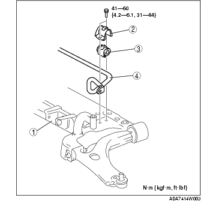

Front stabilizer removal/installation
1. Remove in the order indicated in the table.

2. Install in the reverse order of removal.
3. Inspect the wheel alignment, and adjust it if necessary. (See FRONT WHEEL ALIGNMENT.)
Stabilizer Installation Note
1. Temporarily install the stabilizer to the crossmember.
2. Suspend the stabilizer using a cable as shown in the figure.

3. Tighten the bolt properly.
4. Remove the cable.
Stabilizer Bracket Installation Note
1. Align the stabilizer bushing to the mark on the stabilizer, and install it so that the opening is facing toward the front of the vehicle.
2. Install the stabilizer bracket so that the arrow on it is facing toward the front of the vehicle.